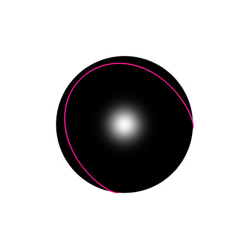
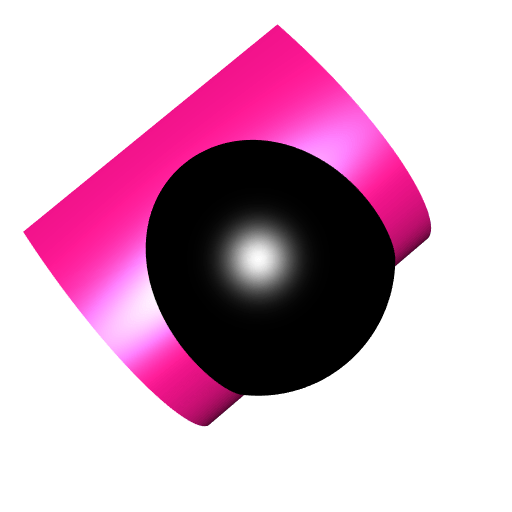
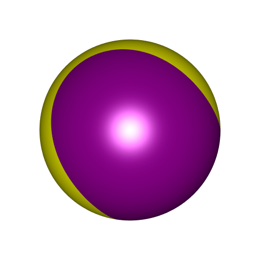

Using implicitization to split a ball
I introduced the Gröbner implicitization and the giacR package in the previous post. We will see an application here.
Consider this satellite curve:
satelliteCurve <- function(t, rho = 3/4) {
A <- cospi(rho)
B <- sinpi(rho)
cost <- cos(t)
cos2t <- cos(2*t)
sint <- sin(t)
sin2t <- sin(2*t)
cbind(
A*cost*cos2t - sint*sin2t,
A*sint*cos2t + cost*sin2t,
B*cos2t
)
}
library(rgl)
t_ <- seq(0, 2*pi, length.out = 200L)
scurve <- satelliteCurve(t_)
sphmesh <- Rvcg::vcgSphere(subdivision = 5)
shade3d(smesh, color = "black", polygon_offset = 1)
lines3d(scurve, color = "deeppink", lwd = 3)
We would like to assign two different colors to the two parts of the sphere separated by the satellite curve.
I know only one solution: find a surface whose intersection with the sphere is this satellite curve, then use rgl::clipMesh3d. It is possible to find such a surface with the Gröbner implicitization. Here is how:
library(giacR)
giac <- Giac$new()
equations <-
"x = A*cost*cos2t - sint*sin2t, y = A*sint*cos2t + cost*sin2t, z = B*cos2t"
relations <- paste0(
"A^2 + B^2 = 1, cost^2 + sint^2 = 1, ",
"cos2t = cost^2 - sint^2, sin2t = 2*sint*cost"
)
variables <- "cost, sint, cos2t, sin2t"
constants <- "A, B"
giac$implicitization(equations, relations, variables, constants)
## [1] "z^3*A-2*y^2*A*B-z^2*A*B+z^3+2*y^2*B+z^2*B-2*z*B^2-z*A+A*B+z-B"
## [2] "x^2+y^2+z^2-1"
## [3] "A^2+B^2-1"
giac$close()
## [1] TRUEFirst, we entered the system of three parametric equations. Giac is not aware that cost is \(\cos t\) and sint is \(\sin t\). So we enter the relation cost^2 + sint^2 = 1. We also enter the expression of \(\cos 2t\) in function of \(\cos t\) and \(\sin t\), and the same for \(\sin 2t\).
As you can see, the Gröbner implicitization returned three polynomials. The third one is the relation \(A^2 + B^2 = 1\) that we provided. The second one is \(x^2 + y^2 + z^2 = 1\). It means that \((x, y, z)\) is on the unit sphere. The first one is what we were looking for! Let’s call it \(f\), and let’s plot the implicit surface \(f(x,y,z) = 0\):
A <- cospi(3/4); B <- sinpi(3/4)
f <- function(x, y, z) {
z^3*A - 2*y^2*A*B - z^2*A*B + z^3 +
2*y^2*B + z^2*B - 2*z*B^2 - z*A + A*B + z - B
}
library(rmarchingcubes)
library(rgl)
n <- 100L
x_ <- y_ <- z_ <- seq(-1.05, 1.05, length.out = n)
Grid <- expand.grid(X = x_, Y = y_, Z = z_)
voxel <- with(Grid, array(f(X, Y, Z), dim = c(n, n, n)))
surf <- contour3d(voxel, level = 0, x_, y_, z_)
mesh <- tmesh3d(
vertices = t(surf$vertices),
indices = t(surf$triangles),
normals = surf$normals
)
sphmesh <- Rvcg::vcgSphere(subdivision = 5)
shade3d(mesh, color = "deeppink")
shade3d(sphmesh, color = "black")
You see, the intersection of the surface with the sphere is the satellite curve.
Remember we wanted to play with colors. So let’s clip now. We clip the sphere mesh to the volumes defined by \(f > 0\) and \(f < 0\).
mesh1 <- clipMesh3d(sphmesh, f, greater = TRUE, minVertices = 20000L)
mesh2 <- clipMesh3d(sphmesh, f, greater = FALSE, minVertices = 20000L)
shade3d(mesh1, color = "magenta4")
shade3d(mesh2, color = "yellow")
Of course, our construction was possible because we had polynomial expressions. Otherwise we cannot use this method.